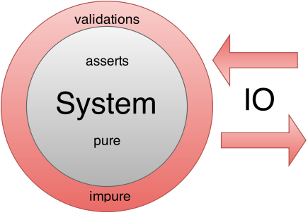

Static e runtime checking in JavaScript
TypeScript, Flow, AtScript
## Giulio Canti
### web developer @ madai ltd
### Matematico
## Sommario
1. ### Teoria (degli insiemi)
- ### Pratica (TypeScript, Flow, AtScript)
- ### Terzo tempo
## Introduzione
1. ### cosa sono i tipi?
- ### a cosa servono?
- ### **static** type checking?
- ### **runtime** type checking?
Linguaggio dinamico
function Person(name, surname, age) {
this.name = name;
this.surname = surname;
this.age = age;
}
var person = new Person(true, true, true); // WTF!
Static type checking
function Person(name: string, surname: string, age: number) {
this.name = name;
this.surname = surname;
this.age = age;
}
var person = new Person(true, true, true); // TypeScript complains
var person = new Person("", null, -1); // WTF!
Runtime type checking
function Person(name, surname, age) {
assert(typeof name === 'string' && name);
assert(typeof surname === 'string' && surname);
assert(typeof age === 'number' && age >= 0);
this.name = name;
this.surname = surname;
this.age = age;
}
var person = new Person("", null, -1); // throws
## Predicato
Una funzione con arità 1 e che restituisce un booleano
```
// (x: any) => boolean
function isString(x) {
return typeof x === 'string';
}
```
Alcune API che utilizzano i predicati...
```
Array.prototype.filter
Array.prototype.some
Array.prototype.every
[1, 'a', 2].filter(isString); // => ['a']
```
## `assert()`
```
function assert(guard, message) {
if (guard !== true) {
debugger; // <= potete ispezionare lo stack
throw new TypeError(message || 'assert failed');
}
}
```
## Un `TypeError` è per definizione un baco
asserts !== validations

# Teoria
(e runtime checking)
Per Martin-Löf
Logician, philosopher, and mathematical statistician (1942)
# Insiemi
"Un insieme è una collezione di oggetti"
Il concetto di insieme è considerato primitivo ed intuitivo
## Tipi ⇄ Insiemi
Esempio: il tipo `Boolean` è l'insieme che contiene i due elementi `true` e `false`
## Come rappresentare un insieme in JavaScript?
## Rappresentazione estensiva
```
// ok per insiemi finiti e..."piccoli"!
var Boolean = [true, false];
```
## Funzione caratteristica
Ad un insieme `A` posso associare il predicato `isA`
`isA(x) = true`, se `x ∈ A`
`isA(x) = false`, se `x ∉ A`
Ad ogni predicato `isA` posso associare un insieme
`A = { x ∈ Any | isA(x) = true }`
ove `Any` è l'insieme universo
## Rappresentazione intensiva
```
function isNumber(x) {
return typeof x === 'number';
}
```
Insieme universo: Any
function isAny(x) { return true; }
Insieme vuoto
function isEmptySet(x) { return false; }
Insieme di tutti gli array
Array.isArray
## Sottoinsieme
`A ⊆ B` se per ogni `a ∈ A` vale `a ∈ B`
```
function isAge(x) {
return isNumber(x) && x >= 0;
}
```
( Subtypes )
## Intersezione
`A ∩ B = { x ∈ Any | x ∈ A ∧ x ∈ B }`
```
function isAiB(x) {
return isA(x) && isB(x);
}
```
( Intersection types )
## Unione
`A ∪ B = { x ∈ Any | x ∈ A ∨ x ∈ B }`
```
function isAuB(x) {
return isA(x) || isB(x);
}
```
( Sum types )
## Prodotto cartesiano
`A ⨯ B = { (a, b) | a ∈ A, b ∈ B }`
```
// tuple
function isAxB(xs) {
return Array.isArray(xs) && // è un array
xs.length === 2 && // è una generica tuple2
isA(xs[0]) && // controllo A
isB(xs[1]); // controllo B
}
```
( Product types )
### **sum** types + **product** types = ADT (algebraic data types)
altri prodotti cartesiani notevoli:
### Array
`A1 ⨯ A2 ⨯ ... = { (a1, a2, ... ) | ai ∈ Ai}`
```
Array.isArray
```
### Liste
`A* = { (a_1, a_2, ... ) | a_i ∈ A}`
```
function isListOfNumbers(x) {
return Array.isArray(x) && x.every(isNumber);
}
```
### Type combinators
```
function list(isA) {
var p = function (x) {
return Array.isArray(x) && x.every(isA);
};
p.kind = 'list'; // <- allows "runtime type introspection"
p.type = isA;
return p;
}
var isListOfNumbers = list(isNumber);
var isMatrixOfNumbers = list(list(isNumber));
...
```
[https://github.com/gcanti/tcomb](https://github.com/gcanti/tcomb)
[https://github.com/gcanti/flowcheck](https://github.com/gcanti/flowcheck)
### Le funzioni sono insiemi
`C = { f: A -> B } ⊆ A ⨯ B`
se `(a, b1)` e `(a, b2) ∈ C` allora `b1 = b2`
```
// (a: int) => int
function f(a) { return 2 * a; }
"syntactic sugar" per:
(1, 2)
(2, 4)
(3, 6)
...
```
Oggetti?
Sono prodotti cartesiani mimetizzati tra funzioni e tuple...
### Oggetti come funzioni (`Map`)
```
JavaScript Math
----------------------------------------
var f = { f: string -> number
"a": 1, "a" -> 1
"b": 2, "b" -> 2
"c": 3 "c" -> 3
};
f["b"] -> 2 f("b") -> 2
```
### Oggetti come tuple
```
object tuple
----------------------------------------
{ [
"name": "Giulio", "Giulio",
"surname": "Canti", "Canti",
"age": 41 41
} ]
function Person(name, surname, age /* <- tuple */) {
this.name = name;
this.surname = surname;
this.age = age;
/* ^-- object */
}
```
Fine primo tempo
| Insiemi |
Tipi |
| universo |
Any |
| sottoinsiemi |
number, string, ...
subtypes |
| intersezioni |
intersection types |
| unioni (disgiunte) |
sum types |
| prodotti cartesiani |
product types |
funzioni
f: A -> B |
function types
(a: A) => B |
## Che cos'è?
- ### Superset di JavaScript
- ### Static type checker
- ### Compiler (ES6)
## Stats
- Microsoft
- parte nel 2012
- v1.4
- Anders Hejlsberg (C#, Delphi, Turbo Pascal)
- GitHub issues: 530 open, 953 closed
## Setup
`npm install typescript`
## Usage
`tsc input.ts --out output.js`
## Type inference
```
var i = 0; // i è di tipo `number`
function f() {
return "hello"; // f restituisce un tipo `string`
}
var x: number = f(); // error TS2322: Type string is not assignable to type number
```
## Primitive
```
// var name: type [= value];
var all: any;
var num: number;
var str: string;
var bool: boolean;
```
## Attenzione!
```
var a: number = null; // ok per TypeScript
var b: number = undefined; // ok per TypeScript
```
## Intersection types
```
// User-defined data type (1/2)
interface Point {
x: number;
y: number;
}
var p: Point: {x: 1, y: 2};
```
```
interface A {}
interface B {}
interface C extends A, B {} // <- intersection type
```
## Sum types
```
// dalla v1.4
var x: number | string = 1;
```
### Tuples
```
var tuple: [string, number] = ['a', 1];
```
### Lists
```
var list: Array<number> = [1, 2, 3];
var list: number[] = [1, 2, 3];
```
### Arrays
```
var arr: any[] = ['a', 2, 3];
```
### Objects
```
var point: {x: number; y: number;} = {x: 1, y: 2};
```
### Mappe
```
var mymap: {[key: string]: number;} = {
a: 1,
b: 2,
c: 3
};
```
## Classi (1/2)
```
class Person {
name: string;
surname: string;
age: number;
constructor(name: string, surname: string, age: number) {
this.name = name;
this.surname = surname;
this.age = age;
}
}
var p = new Person(true, true, true);
// error TS2345: Argument of type 'boolean' is not assignable
// to parameter of type 'string'
```
## Classi (2/2)
```
// modifiers: public, private, protected
class Person {
constructor(
public name: string,
public surname: string,
public age: number) {
}
}
```
## Funzioni
```
function len(s: string): number {
return s.length;
}
```
ES6 fat arrow
```
var len = (s: string): number => s.length;
```
Function types
```
function asyncOp(callback: (result: string) => any): void {
...
}
```
### Type alias
```
// User-defined data type (2/2)
type StringOrNumber = string | number;
type Text = string | { text: string; };
type Coordinates = [number, number];
```
### Internal modules
```
module A {
module B {
export var value = 1;
}
}
console.log(A.B.value); // => 1
```
### External modules
```
// file mylib.ts
var b = 1;
export = b; // same as module.exports = b;
```
```
// file myapp.ts
import b = require('./mylib');
```
## Definition files
```
/// <reference path="path/to/jquery.d.ts" />
```
https://github.com/borisyankov/DefinitelyTyped
### Polimorfismo (AKA Generics)
```
function map<A>(xs: A[], f: (x: A) => A): A[] {
...
}
map([1, 2, 3], (x) => 'a'); // error!
```
- funzioni
- classi
- interfaces
## Compiler flags
- `--watch`
- `--sourceMap`
- `--noImplicitAny`
- `--target ES3-5-6`
- `--declaration`
## Pros
- **Language Specification** (161 pagine)
- `--noImplicitAny`
- DefinitelyTyped
- IDE support (VS, WebStorm, Sublime)
## Cons
- gestione manuale dei definition files
- nullable types
- no JSX support
- type erasure (!?)
## Type erasure
> ...e tutti quei momenti andranno perduti nel tempo come lacrime nella pioggia...
— Blade Runner
## Che cos'è?
- ### Superset di JavaScript
- ### Static type checker
## Stats
- Facebook
- novembre 2014
- v0.5
- GitHub issues: 153 open, 86 closed
### Compatibile con TypeScript?
# No :-(
| Flow |
TypeScript |
Object |
Object - (primitives | Function) |
T |
T - (null | void) |
?T |
T |
A & B |
interfaces+ function overloading |
type alias (generics) |
interfaces + type alias |
## Setup
Download Flow...
## Usage
```
flow check
# oppure...
flow start
flow check
```
### .flowconfig
```
[ignore]
[include]
./node_modules
[libs]
...definition files here
[options]
```
### Type annotations nei commenti
```
/* @flow */
function sum(a/*: number*/, b/*: number*/) {
return a + b;
}
sum('a', 2);
// error: string This type is incompatible with number
```
### Classes
```
class Person {
name: string;
surname: string;
age: number;
constructor(name, surname, age) {
this.name = name;
this.surname = surname;
this.age = age;
}
}
```
### JSX
```
var HelloMessage = React.createClass({
render() {
return <div>hello</div>;
}
});
React.render(<Hello />, document.body);
// error: React element: Hello Unknown global name
```
### PropTypes (1/2)
```
var Foo = React.createClass({
propTypes: {
foo: React.PropTypes.number.isRequired
}
});
React.createElement(Foo, { foo: "not a number" });
// string This type is incompatible with number
```
### PropTypes (2/2)
```
// v0.13
class HelloMessage extends React.Component {
constructor(props: { name: string; }) {
super(props);
}
render() {
return <div>Hello {this.props.name}</div>;
}
}
React.render(new HelloMessage({name: 1}), document.body);
// error: number This type is incompatible with string
```
## Pros
- aggressive type inference
- non nullable types
- enums come stringhe
- Type annotations nei commenti
- better commonjs support
- JSX support
## Cons
- cryptic error messages
- no Windows
- no `--noImplicitAny`
- no `import` o `export`
- type erasure
## Che cos'è?
- ### Superset di JavaScript
- ### compiled by Traceur
## Risorse
- AtScript Primer
- https://github.com/angular/atscript-playground
- https://github.com/angular/angular (v2.0)
### Runtime Type Assertions
```js
// AtScript...
class MyClass {
methodA(name: string): int {
var length: int = name.length;
return length;
}
}
```
```js
// ... compiles to ES6
import * as rtts from 'rtts'; // assert library (customizable)
class MyClass {
methodA(name) {
rtts.type(name, rtts.string);
var length = rtts.type(name.length, rtts.int);
return rtts.returnType(length, rtts.int);
}
}
```
### Runtime type introspection
```js
class MyClass {
constructor(name: string, list: Array) {}
}
```
```js
import * as rtts from 'rtts';
class MyClass {
constructor(name, list) { }
}
MyClass.parameters = [
{is: rtts.string},
{is: Array}
];
```
### Annotations
```js
@Component({selector: 'foo'})
class MyComponent {
@Inject()
constructor(server: Server) {}
}
```
```js
class MyComponent {
constructor(server) {}
}
MyComponent.parameters = [{is:Server}];
MyComponent.annotate = [
new Component({selector: 'foo'}),
new Inject()
];
```
## Runtime checking
1. "It allows **free mixing of existing libraries** which do not have type annotations"
- "The **semantics** of types can be **left to the implementor**"
- "**Runtime type verification** can be used to verify that the JSON returned from the server is of a valid structure"
- "Since the type errors should be caught and resolved before pushing the code to production, **all of the assertions can be stripped** from production builds"
> It is far, far easier to make a correct program fast than it is to make a fast program correct.
— Herb Sutter
# Fine
## [https://github.com/gcanti](https://github.com/gcanti)
## [@GiulioCanti](https://twitter.com/GiulioCanti)